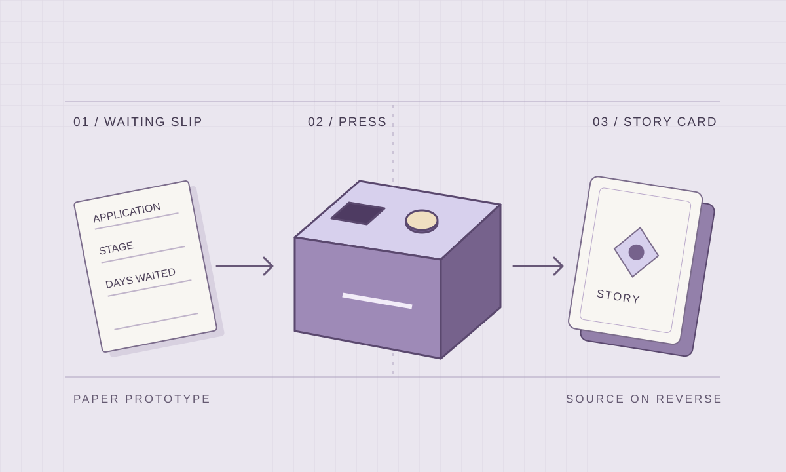

Signal Box.
Helping graduate applicants make sense of the wait after a job application.
When an employer goes quiet, applicants start looking for clues. I studied how international students decide when to wait, follow up or move on. Our team then tested a physical prototype that matched a waiting situation to a sourced story from another applicant.

01 / RESEARCH AND TESTING
From interviews to a testable interaction
My research. I synthesised background evidence, mapped who could influence the wait and interviewed three people at different stages of the transition from study to work. I asked them to reconstruct a specific wait and explain what prompted their next move.
Team prototype. Participants filled in a waiting slip, pressed a button and received a story card. A team member selected the card behind the box while the participant thought aloud. I prepared a time-coded observation record from one session, recording hesitation, requests for help and whether the participant found the source on the card.
What we measured. Across four exploratory sessions, the team used task observations, short interviews and a post-test questionnaire. I recorded task times and whether the participant needed prompting. Three complete response sets supported the 10-item System Usability Scale (SUS), pre- and post-task worry ratings and a trust rating after the source was shown.
02 / FINDINGS AND ITERATION
A clearer response from the box
- SUS score
- 76.7 / 100
- Worry before and after
- 4.67 → 2.67 / 5
- Trust after seeing the source
- 4.33 / 5
Descriptive summaries from three complete records. The small exploratory study leaves longer-term outcomes and prediction comprehension open.
Some participants hesitated or pressed repeatedly, so the team added a light and sound response. Readers needed a prompt to turn the card over, so we made the two-sided format more obvious. A request to share a story led to an optional submission route alongside source verification.